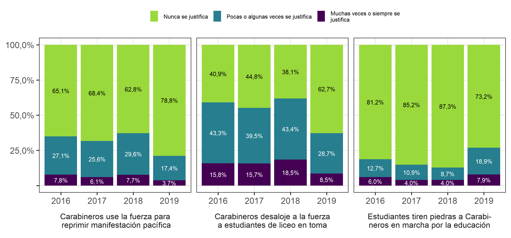

13.2 Justificación de la violencia para el control social – a manos de carabineros
Tal como lo revela la Figura 6.2, existe un alto consenso en la población respecto de no justificar el uso de la fuerza por parte de Carabineros para reprimir una marcha pacífica. En torno al 65% de las personas señala el 2016 que nunca se justifica este actuar. Esta cifra, que se mantiene relativamente estable en el tiempo, aumenta de manera significativa post estallido social de octubre 2019 alcanzando un 79%.
Un patrón distinto de justificación del uso de la fuerza se constata cuando se analiza que Carabineros desaloje a la fuerza a estudiantes de liceo en toma. Si el 2016, se encontraba que un 43% lo justificaba a veces y un 16% siempre lo justificaba, estas cifras caen de manera muy significativa el 2019, llegando a un 29% y 8,4% respectivamente. Claramente, post estallido social, se justifica en menor medida esta forma de control social ejercido por Carabineros.
Cuando se consulta por el nivel de justificación de la violencia en contra de Carabineros -que los estudiantes tiren piedras a Carabineros en marchas por la educación-, se constata un alto consenso en indicar que nunca justifica este accionar. Sin embargo, llama la atención, que post estallido social, esta cifra cambia, aumentando la proporción de personas que la justifica a veces (19%) y en torno a un 8% que siempre se justifica.
13.2.1 6.2 Justificación de la violencia en relación al actuar de Carabineros, según ola
 > Nota: Resultados Ponderados (con Diseño Muestral Complejo). N = 1.911